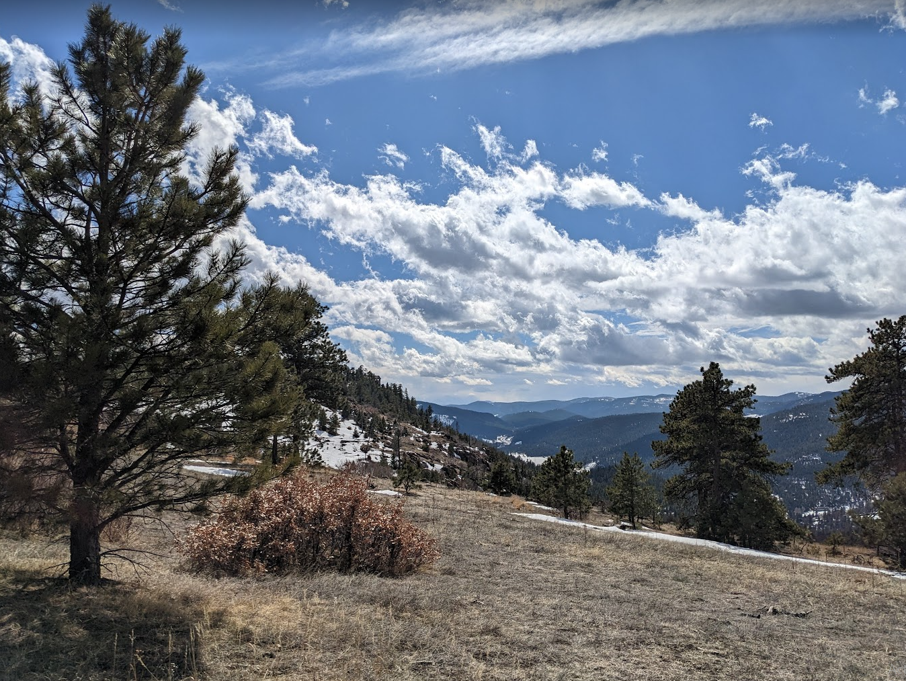
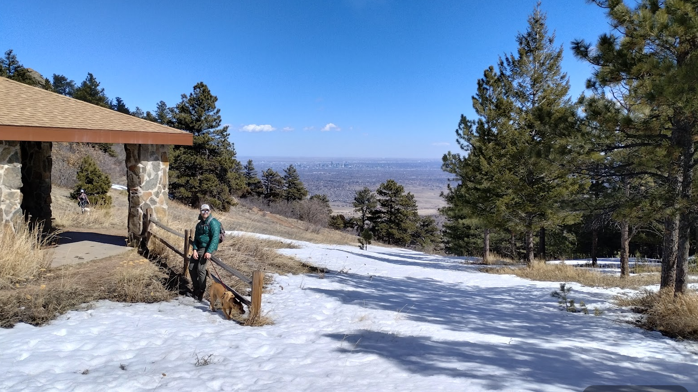
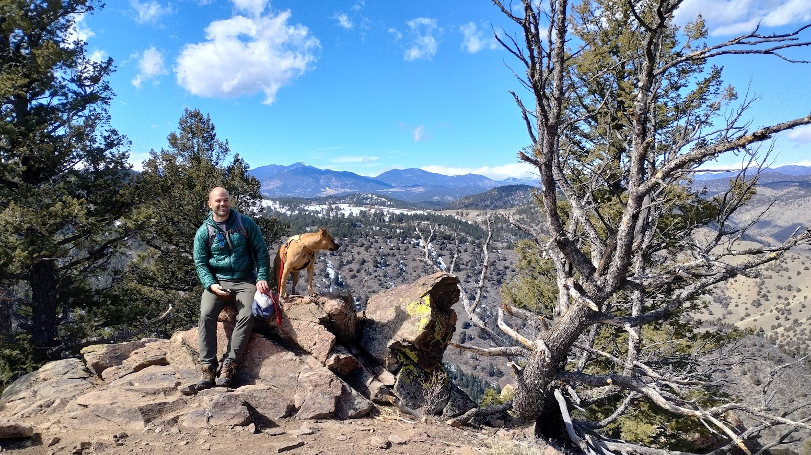
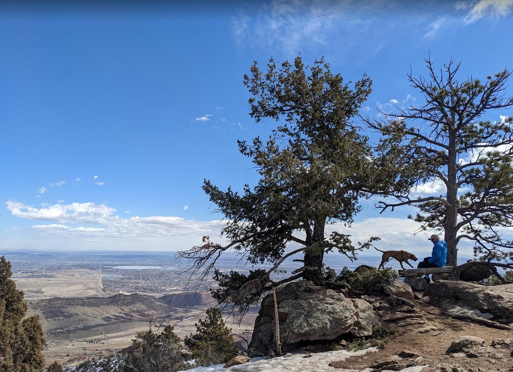
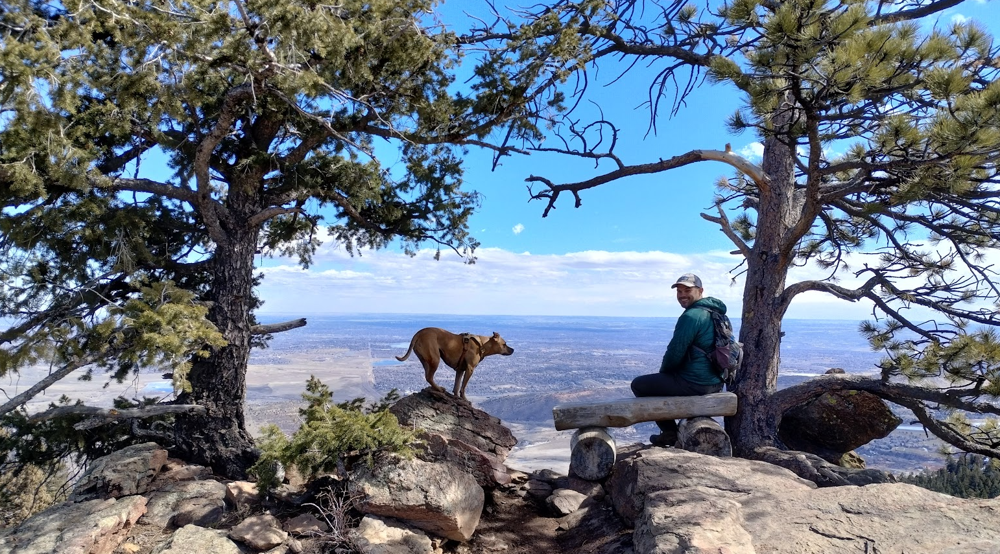
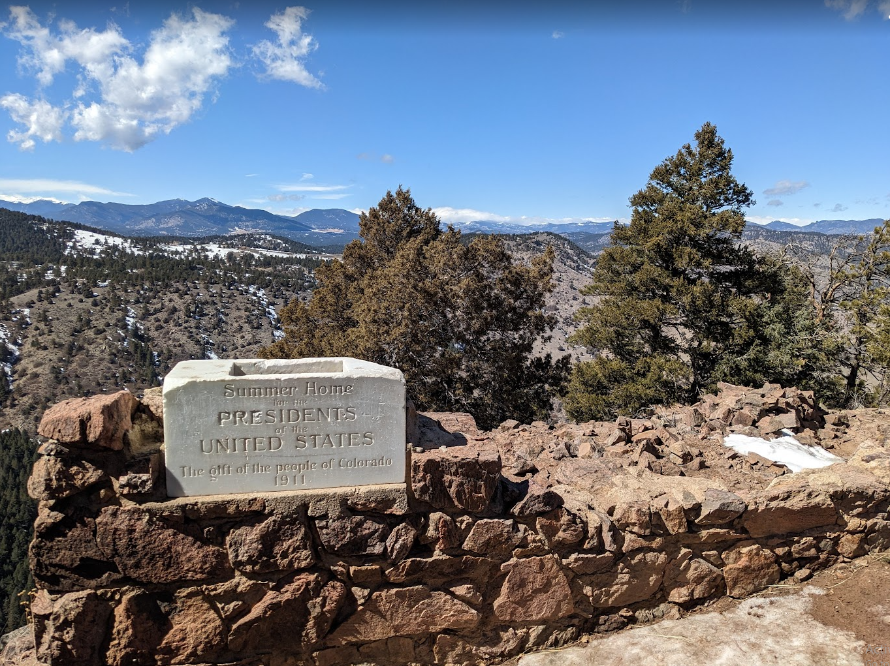
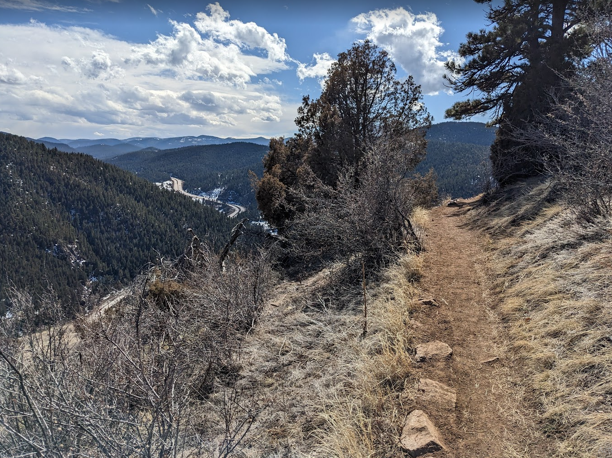

I’ve gotta come clean - I skipped a week. I, Peter Martin, did not hike last weekend. Golly it feels good to get that off my shoulders.
Today, pops and I were thinking of heading out to Rocky Mountain National Park, but when we were about to leave I checked the forecast for Essex Park - 38 and cloudy. We pivoted to Mount Falcon, which was 50s and sunny, and we remarked a few times how glad we were that we did.
Next speed bump - I drove us to the Eastern trail head which is way way lower elevation; 1500 feet below the western trail head. Back in the car we got and around we went!

From the moment we got out of the car we were surrounded by sweeping vistas. I think the trail head was ~7700’ and for the entire hike we felt like lords of the front range.

Much of the hike was along the spine of the hill, with scattered trees lining the pretty gentle path.

When we got to the “front” of the hills (the summit was actually back near the car) we were treated to great shots out over the Front Range Urban Corridor - see Denver proper off in the distance there?!

Over our shoulders, the front range melded into the middle range which abuts the back country. It was an awesome view no matter where you looked (especially when Kora was in it, har har har).

Another contender for shot of the year, Kora was very excited to pose for photos today. No grouchy looks or side eye - she was ecstatic to bounce between the rocks and me and dad! I really like this photo within a photo; simply a man and his (son’s) dog look out over the world.

You can see the wheels turning here, Kora’s thinking Is he about to say ‘ok’ and that’s when I jump to the bench!? - what a good mutt. She gets a gold star today. Not much different than most other days though I guess :)

You’ll never believe it but the far point of the hike was the actual summer house of the president of the united states itself! I didn’t see any secret service, but, then again, if they’re doing their job I assume I won’t see them. They were so sneaky Kora didn’t even alert on them. Can’t believe i could just walk right into the summer house either - tells you how much of a threat I seem when assessed by trained professionals.

I took a loopy way back to the car, which included this shot of a “path to nowhere” - don’t worry, it didn’t really end between those shrubs and I made it back to the car, sandwiches, dad, chips, and ginger snaps safely!